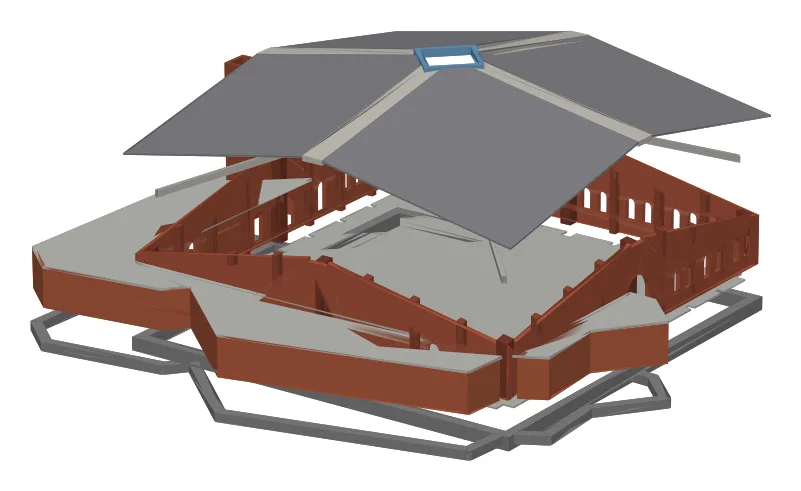

مقاومسازی لرزهای
ارزیابی آسیبپذیری و طرح تقویت، از خانهی بنایی تا ساختمان اسکلتدار.
- کلاف و مهار دیوار
- تقویت سقف طاقضربی
- روکش و الیاف FRP
خانهی قدیمیتان را ایمنتر در برابر زلزله، گرمتر در زمستان و زیباتر میکنیم؛ بدون اینکه هویتش از دست برود.
هر کار با یک بازدید و ارزیابی شروع میشود؛ بعد میدانیم کجا باید دست برد و کجا نه.
ارزیابی آسیبپذیری و طرح تقویت، از خانهی بنایی تا ساختمان اسکلتدار.
خانهای که زمستان گرم و تابستان خنک میماند.
نگه داشتن آنچه ارزش دارد، با کمترین مداخله.
بازسازیای که سازه را ضعیف نکند.

نقشهی وضع موجود، مدل سولید و ANSYS، شبیهسازی انرژی و نور، مدل BIM.
ببینید چه کارهایی میکنیم ←علاقهام به بهسازی از خانهی خودمان شروع شد: وقتی به خانهی فلزی خانوادهام نیمطبقه اضافه شد، ارزیابیاش کردم و دیدم چند ستون ظرفیت کافی ندارند.
من پریسا قاسمزاده هستم، مهندس سازه با تمرکز روی ارزیابی لرزهای و مقاومسازی ساختمانهای موجود و تاریخی. کارشناسی مهندسی عمران را در دانشگاه ارومیه و کارشناسی ارشد مهندسی بهسازی ساختمان (Engineering for Building Retrofitting) را در دانشگاه جنوای ایتالیا خواندم.
ایتالیا مثل ایران هم زلزله دارد و هم پر از ساختمان قدیمی است. آنجا یاد گرفتم یک بنا را با مدلسازی دقیق بشناسم و بعد با کمترین مداخلهی لازم ایمن و کممصرف کنم. نوخشت را در ارومیه راه انداختم تا همین تجربه را به خانهها و بناهای این شهر بیاورم.
مطالعهی بناهای ارزشمند: چه دارند، چه آسیبی دیدهاند و چطور میتوانند ایمن بمانند و دوباره زنده شوند.

بنای جهانگیر درویش (۱۳۴۸–۴۹) با سالن بیستون حدود ۱۳۵۰ متری. شناخت، آسیبشناسی، کاربری تازه، طرح و مقاومسازی.
خواندن پرونده ←
ارزیابی لرزهای یک برج سنگی قرونوسطایی: ابر نقاط، مدل سهبعدی، تحلیل غیرخطی و پوشاور در ANSYS، و پیشنهاد مداخلهی سازگار. نمرهی ۳۰ از ۳۰.
خواندن پرونده ←ارزیابی اثر فرونشست زمین بر سلامت سازهای بازار ضلع شمالی میدان نقش جهان (میراث جهانی یونسکو) و سردر قیصریهی اصفهان، با مدلسازی عددی. دانشگاه جنوا.
فرم را پر کنید و یکی از راههای ارسال را بزنید. پیام آماده میشود و فقط کافی است بفرستید.
اطلاعات این فرم در سایت ذخیره نمیشود و مستقیم برای ما فرستاده میشود.